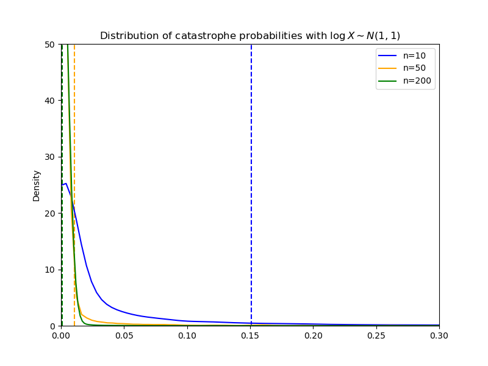
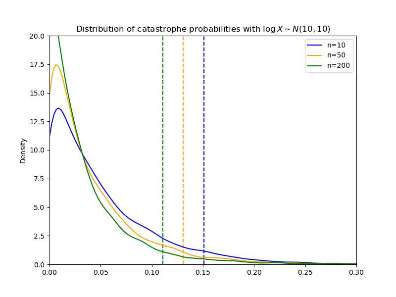

“Redundant” AI alignment
Let’s suppose that you’ve somehow created a superhuman artificial general intelligence and have figured out how to align this AI’s objectives with the preferences of any given person. (That is, you can tell this AI to look out for someone, and the AI will then figure out what that person wants and do its best to facilitate those desires.) This seems like good progress, but we’re not out of the danger zone yet: what else can we do to keep this situation from getting out of control?
One idea is to create not one, but many, instances of this AI and tell each one to advocate for different people, the idea being that if one of the instances gets out of control, the others can reign it in and shut it down. The question that I want to answer here is how well we should expect that strategy to work.
A model
Let’s suppose that we have \(n\) AIs, each with a “capability” \(X \in \mathbb R\) independently drawn from the same distribution.
We’ll say that the probability that an AI with capability \(X=x\) attempts to go out of control (meaning that it turns against what we would think of as generally in humanity’s interest) is \(p(x)\).
Finally, we’ll define a function \(C: \mathbb R^{n-1} \rightarrow \mathbb R\), and say that, if the capabilities of our AIs are \(x_1, x_2, \dots, x_n\), and \(x_i\) goes out of control, the other AIs can successfully shut it down if \[C(x_{j \neq i}) > x_i.\] You can think of \(C\) as the capacity/cooperation/control/capture function.
What does this model say about the probability that an AI goes out of control and successfully avoids getting shut down (a situation which we’ll refer to as “catastrophe”)? Let’s start by examining a few simple cases to get an intuition:
Case 1
One assumption we can make is that \(C(x_{j \neq i}) = \max {x_{j \neq i}}\). Thus an AI can avoid being shut down if and only if it has the highest capability of all the AIs, so the probability of catastrophe is simply the probability that the most capable AI goes out of control, that is \[\text{Pr} \left\{ \text{catastrophe} \right\} = \text E [p(X_{n:n})],\] where \(X_{n:n}\) is the \(n\)th order statistic.
This is not very assuring. Importantly, it means that, unless \(p\) is a decreasing function, having more redundancy (higher \(n\)) is not helpful. If \(p\) is increasing, then higher \(n\) is actually harmful.
Case 2
Let’s now make the assumption that \(C(x_{j \neq i}) = \sum_{j \neq i} x_j\). This means that the AIs can cooperate perfectly to shut down an errant AI. In this case, the probability of catastrophe is \[\Pr \left\{ X_{n:n} \geq \sum_{i=1}^{n-1} X_{i:n}, \ p(X_{n:n}) \geq \text{Unif}(0,1) \right\}.\] This is a bit harder to unpack, but there are a few things we can note:
First, it is still the case that only the most capable AI can successfully avoid capture. Second, we now have a situation where higher redundancy is almost always beneficial. For example, if the \(X_i\)'s are uniformly distributed and \(p\) is [approximately] constant, then the probability of catastrophe becomes vanishingly small as \(n\) increases. Other, heavy-tailed, distributions or highly increasing \(p\) may require \(n\) to be quite large to get an acceptably small probability of catastrophe, but this is at least a more manageable case than Case 1.
Case 3
It is reasonable to expect that the AI agents will not be able to cooperate perfectly, i.e. there may be decreasing returns to more agents helping. To model this, let’s assume that \(C\) takes the form \[C(X_{j\neq i}) = \max_{M} \left \{ \max_{j_1, \dots, j_M} \left\{M^{-c} \sum_{m=1}^M X_{j_m}\right\}\right\},\] where \(c \geq 0\) is a “collaboration cost” coefficient.
What is this saying? Here \(M\) is the number of AIs that collaborate to reign in an errant AI. As \(M\) increases, more AIs contribute, but they face a collaboration penalty of \(M^{-c}\). We assume that the AIs choose the best value of \(M\) and the most capable instances among themselves to maximize their effectiveness. Note that a lower value of \(c\) implies that the AIs are better at collaborating, with this case identical to Case 2 when \(c = 0\). Notice also that the AIs will never cooperate if \(c\geq 1\), meaning that this case will devolve to Case 1. This case is therefore an intermediate case between Case 1 and Case 2: we move on a continuum of no cooperation (when \(c\geq 1\)) to perfect cooperation (when \(c=0\)). As the cost of cooperation increases, we should expect the probability of catastrophe to increase.
Case 4
Let’s add one additional detail before we move on: up until now, we have assumed that the capability \(X\) of an AI is equally representative of an AI’s ability to capture an errant AI and to avoid being captured by other AIs. What if the competition is more asymmetric, so it takes relatively less (or more) capability to avoid capture? To model this, let’s introduce an “asymmetry” parameter \(a > 0\) to the functional form for \(C\): \[C(X_{j\neq i}) = a\cdot\max_{M} \left\{ \max_{j_1, \dots, j_M} \left\{M^{-c} \sum_{m=1}^M X_{j_m}\right\}\right\}.\] For \(a > 1\), the errant AI has a disadvantage (beyond just being outnumbered); avoiding capture is more difficult than capturing. For \(a < 1\), the errant AI has an advantage; avoiding capture is easier than capturing.
This isn’t fundamentally different from Case 3 (and, of course, it’s identical if \(a = 1\)), but we can note a couple of distinguishing characteristics: first, for values of \(a > 1\), it may (depending on the distribution of \(X\)) be impossible for any AI to avoid capture; second, for \(a < 1\), it may be possible for AIs other than the most capable AI to avoid capture.
Case 4 is a superset of each of the previous cases, so we’ll take that as our default functional form for \(C\) going forward. Even Case 4 is restrictive, but we’ll take that bit of restriction in exchange for a model that’s not excessively complicated.
Which versions of the model are more plausible?
The first question we ought to think about is what distribution we expect the AI capabilities to come from. This is important because for more uniform distributions, redundancy is typically effective at lower \(n\), while distributions with long tails on the right may require a high \(n\) to sufficiently mitigate the probability of catastrophe. To answer this question, we need to think about how we expect the capabilities of these AI to evolve over time.
Poisson-distributed improvements
Let’s suppose for now that improvements in an AI follow a Poisson process, meaning that the spaces of time between improvements are independent (and follow an exponential distribution). If we let this process run for a long period of time, then the distribution of the total number of improvements can be accurately approximated as normal, with mean equal to its variance.
Therefore, if each improvement increases the AI’s capability by some approximately constant factor (i.e., progress is linear), the resulting distribution of capabilities should also be normal with equal mean and variance. This is not a particularly concerning scenario, since the likelihood of having an unusually capable AI will be quite low.
However, if improvements are instead exponential, meaning that each improvement multiplies the AI’s capability by some growth factor, then the resulting distribution will be more closely approximated by a log-normal distribution. If this is the case, we should expect the most capable AIs to be much more capable than the typical AI. What’s even more concerning is that, as time goes on, the gap between the most capable and least capable AIs will continue to expand, reducing the ability of the AIs to cooperate.
Correlated increments
The assumption that improvements follow a Poisson process might be objectionable; why should we think that the gap between the last two improvements is unrelated to the gap between this improvement and the next? We could reasonably argue that an AI that has made lots of improvements recently may have exhausted its stock of innovation, so it may need more time for the next improvement. We could also argue that an AI that has made lots of recent improvements may be “on a roll” and therefore will likely need less than the usual time for its next improvement. The former would indicate that the distribution of improvements would have lower variance, while the latter would indicate higher variance. It’s not clear which of these (if either) is more likely, so for now we’ll just stick with the assumption of Poisson-distributed improvements. However, this is an assumption that would merit more examination.
Priors over the model parameters
The probability of errancy
What should we expect about the probability \(p(x)\)? It seems at first glance more likely that \(p\) would be increasing rather than decreasing, since more advanced AI would probably have more complicated motivations that resist alignment. That is something of a wild guess, though, so it may be best to assume \(p\) is constant in order to keep the model simpler for now. And, of course, the value of a [constant] \(p\) is still very much up for debate. Below, we’ll use a \(\text B(1,19)\) distribution as a prior, which corresponds to an average probability of \(p=0.05\) but potentially significantly more.
The collaboration cost
What are likely values for the collaboration cost \(c\)? There probably are some benefits to collaboration, but at the same time it seems naive to expect AIs to be able to cooperate seamlessly. As a starting point, I propose a uniform prior on the interval \((0, 1)\).
The asymmetry coefficient
What do we expect about the asymmetry of the problem? It seems reasonable to expect the problem to be biased in favor of the errant AI, since, at the very least, an AI wanting to escape will likely be able to conceal its intent until it’s optimal to make a real attempt. Given this, a prior including both positive and negative values of \(\log a\), but with more weight on negative values, seems appropriate (i.e. suppose \(\log a \sim \mathcal N(-1,1)\)).
Mapping priors, constraining uncertainty
There are, admittedly, a lot of question marks in the preceding discussion. However, we can still do some calculations over various parameter values to determine a likely range of outcomes. Based on these likely outcomes, we can draw some preliminary conclusions about the efficacy of redundancy as an AI alignment precaution.
In the preceding discussion, I proposed these priors for the model parameters:
- \( p \sim \text B(1, 19) \)
- \( c \sim \text{Unif}(0, 1) \)
- \( \log a \sim \mathcal N(-1, 1) \)
Here we'll assume that improvements tend to be compounding, so the distribution on AI capabilities is approximately log-normal. We don't know what the exact parameters of the distribution will be, but we do know that the mean and variance of the distribution should increase over time. With compounding improvements, increases in the variance of the distribution will outpace increases in the mean of the distribution, so abnormally capable AIs will become more likely over time.
Below I show the distribution of catastrophe probabilities that we get from these priors when \( \log X \sim \mathcal N(1,1)\). This is the sort of situation we would expect to see early on, before AI capabilities have diverged much.
The vertical dotted lines mark the 95% upper bounds; you can see that with \(n=10\), the probability of catastrophe is, with 95% confidence, 0.15 or less. By the time we get to \(n=200\), we're very confident that the probability of catastrophe is 1% or less.
The following figure depicts a scenario where the AIs have been improving for some time, so their capabilities are higher and more dispersed.
Here we can see that even with a high degree of redundancy (\(n=200\)), scenarios with a probability of catastrophe in excess of 10% remain quite likely.
Of course, the results we would get from this sort of simulation exercise depend on the priors we use. Someone who disagrees with the priors I proposed can (and should) plug their own values into the model and see what the result is.
Conclusion
My goal here has been to take a first look at the efficacy of using redundancy to reduce the risk from runaway AI. The model I've proposed is by no means perfect, but it does illuminate some general principles that we should have in mind when thinking about this problem. I've listed below some key takeaways:
- Redundancy is most helpful when we expect the cost of cooperation to be low. If the cost of cooperation is sufficiently high, then more redundancy can actually be worse.
- There are decreasing returns to redundancy when the distribution of AI capabilities has a long tail.
- Assuming that the improvements to AI are compounding and follow a Poisson process implies that the distribution of capabilities will be approximately log-normal and will become more dispersed over time.
- Under reasonable parameter assumptions, redundancy is effective when the variance of capabilities is low.
There are, of course, some potentially important complications that have been glossed over to this point: for example, what if AIs conceal their attempt to defect and then cooperate with other errant AIs to avoid capture? Or what if the capabilities of AIs are not drawn independently? These questions merit attention, although this model still serves as a useful starting place. Given the insights gained from this model, I would feel comfortable recommending redundancy as a useful strategy, at least while superhuman AI is in its early stages. However, it is likely that the efficacy of redundancy will fall (potentially quite quickly) over time.